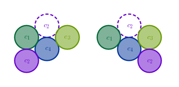
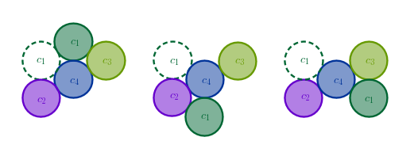

Problem
Align four coins into one contiguous row from the initial formation shown by moving the coins one at a time and releasing each coin at the end of the move if and only if it touches two other coins:
All the coins have the same radius and must remain in the original plane at all times - they can not be lifted off the table.
Solution
There are four coins in the original (symmetrical) formation. Let us try using all these coins in turn for the very first move.
For example, what are all the possible first moves of the coin \(c_1\)? We see that \(c_1\) has only two possible first moves:
where we have indicated the original position of the coin that has been moved with a dashed contour rendering the moved coin in its new position in solid colors.
We observe that both initial moves of \(c_1\) result in new formations of coins that differ from the original ones only by their orientation and not the structure - these formations are original diamonds that are rotated and shifted (translated).
As such, we eliminate the coin \(c_1\) from the potential candidates for the first move.
Due to symmetry we also eliminate the coin \(c_3\) from the potential candidates for the first move based on the same reasoning.
It follows now that if the sequence of moves that solves the problem exists at all then it must begin with either the coin \(c_2\) or the coin \(c_4\). Due to symmetry we eliminate, say, the coin \(c_4\) and now we anticipate that a sequence of moves that solves the problem must begin with \(c_2\).
What are all the possible first moves of \(c_2\)? We see that \(c_2\) has only two possible initial moves and both of these moves result in formations that have identical structure:
As such, we can safely eliminate one of the formations, the right one, for example, and start the elimination process again. However, this time, since we have just moved \(c_2\), we eliminate it from the pool of contestants.
The coin \(c_1\) has three possible moves each of which results in a new formation that is structurally identical to the original formation:
As such, we eliminate \(c_1\) from the pool of candidates for the second move.
The coin \(c_3\) also has only three possible moves each of which results in a new formation that is structurally identical to the original diamond formation:
As such, we eliminate \(c_3\) from the pool of candidates for the second move which leaves us with the only coin, \(c_4\).
What are all the possible moves for \(c_4\)? We see that \(c_4\) has only two possible moves:
We observe that the above formations have the following feature - each formation can be transformed into the other one in one move. Formation \(2.1\) can be transformed into formation \(2.2\) by moving \(c_4\) counterclockwise and positioning it on the left side of \(c_1\) and \(c_2\). Conversely, formation \(2.2\) can be transformed into formation \(2.1\) by moving \(c_4\) clockwise and positioning it on top of \(c_1\) and \(c_3\).
Let us analyze the \(2.2\) formation. Since the coin \(c_4\) has been just moved, we do not consider it.
The coin \(c_3\) has three moves but they all result in the original diamond formation (verify). As such, we eliminate \(c_3\).
The coin \(c_2\) has three moves each of which results in a new formation (not shown here) that is structurally different from the initial formation and should be investigated further. You are encouraged to construct and record these formations yourself.
The only remaining coin, \(c_1\), has only two possible moves of which the left one looks promising:
We observe that the centers of the coins \(c_1, c_2\) and \(c_3\) are collinear and that there is exactly one properly sized opening available between \(c_2\) and \(c_3\) - that is where we place \(c_4\) which solves the problem in four moves:
It now follows that the \(2.1\) formation also leads to a solution but in one extra move.
We also notice that the coin \(c_3\) remained stationary at all times.
\(\blacksquare\)